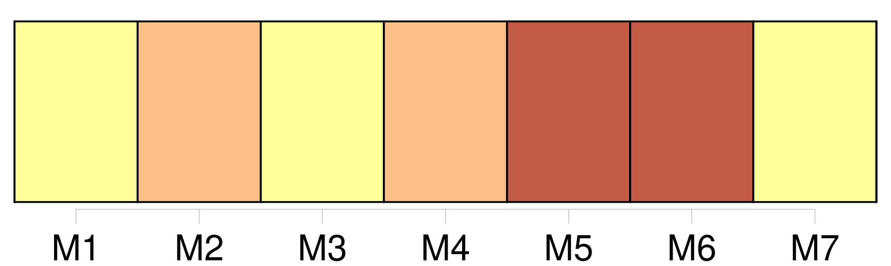

Longueur nb maillons : 9 mentions |
  |
[L'époux commun en biens] , s' [il] opte pour la continuation de la communauté, pourra empêcher l'envoi provisoire et l'exercice provisoire de tous les droits subordonnés à la condition du décès de l'absent, et prendre ou conserver par préférence l'administration des biens de l'absent.
Si [l'époux] demande la dissolution provisoire de la communauté, [il] exercera [ses] reprises et tous [ses] droits légaux et conventionnels, à la charge de donner caution pour les choses susceptibles de restitution. [4 phrases]
Ceux qui auront obtenu l'envoi provisoire, ou [l'époux] [qui] aura opté pour la continuation de la communauté, devront faire procéder à l'inventaire du mobilier et des titres de l'absent, en présence du commissaire du Gouvernement près le tribunal de première instance, ou d'un juge de paix requis par ledit commissaire. [10 phrases]
Si l'absence a continué pendant trente ans depuis l'envoi provisoire, ou depuis l'époque à laquelle [l'époux commun] aura pris l'administration des biens de l'absent, ou s'il s'est écoulé cent ans révolus depuis la naissance de l'absent, les cautions seront déchargées ; tous les ayant-droit pourront demander le partage des biens de l'absent, et faire prononcer l'envoi en possession définitif par le tribunal de première instance. |
La ressource peut être téléchargée sur la page Ortolang
Si vous avez des questions ou vous voyez des erreurs, merci d'envoyer un mail à silvia.federzoni89@gmail.com
Site développé par S. Federzoni (contact)